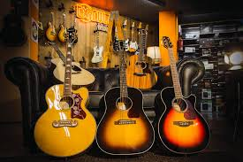

Instrumento musical es un objeto compuesto por la combinación de uno o más sistemas resonantes y medios
para su vibración
Instrumentos
GUITARRA

La guitarra es uno de los instrumentos más populares del mundo, y uno de los más utilizados
para interpretar
todo tipo de música; es muy fácil que hayas oído música de guitarra en directo, tanto en grandes escenarios
como en petit comité, en reuniones de amigos e incluso en acampadas. El sonido dulce de la guitarra y
su gran versatilidad la hacen muy especial.¡Para conocerla más a fondo!
La bateria es un conjunto de instrumentos musicales de percusión usado por muchas
agrupaciones musicales
En algunos países, el término «batería» también se refiere al músico que toca estos instrumentos, al igual
que el término «baterista», ambos equivalentes. Este instrumento nació de la necesidad de producir
diferentes percusiones en un solo sistema agrupado y cómodo para ser tocados simultáneamente por una sola
persona. Para saber más de este maravilloso instrumento
El piano fue inventado por Bartolomeo Cristofori (1655-1731) de Italia.
Cristofori
estaba insatisfecho
por
la carencia del control que los músicos tenían sobre el nivel de volumen del clavicordio. Le acreditan para
cambiar
hacia fuera el mecanismo que rasgar con un martillo para crear el piano moderno en el año 1709.
El instrumento fue hecho primero nombrado "clavicembalo col piano e Forte" (literalmente, un clavicordio que
puede
tocar sonidos suaves y fuertes). Esto se acortó al nombre común ahora, "piano". Conoce más sobre este
instrumento
Dentro de la familia de los bronces, la trompeta tiene un rol muy variado, desde tocar pocas notas hasta
tener un papel protagónico. Cualquiera sea el caso, es un instrumento que se hace notar por su
característico sonido, producido por un complejo mecanismo. En los videos a continuación, Maciej Wolenski,
trompetista de la Orquesta Filarmónica de Santiago, nos invita a conocer interesantes detalles sobre la
historia, funcionamiento e interpretación del instrumento.